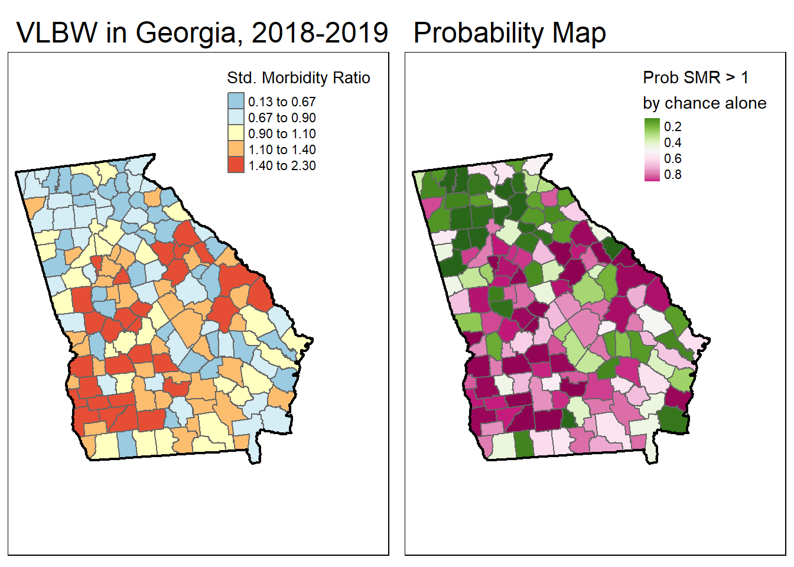
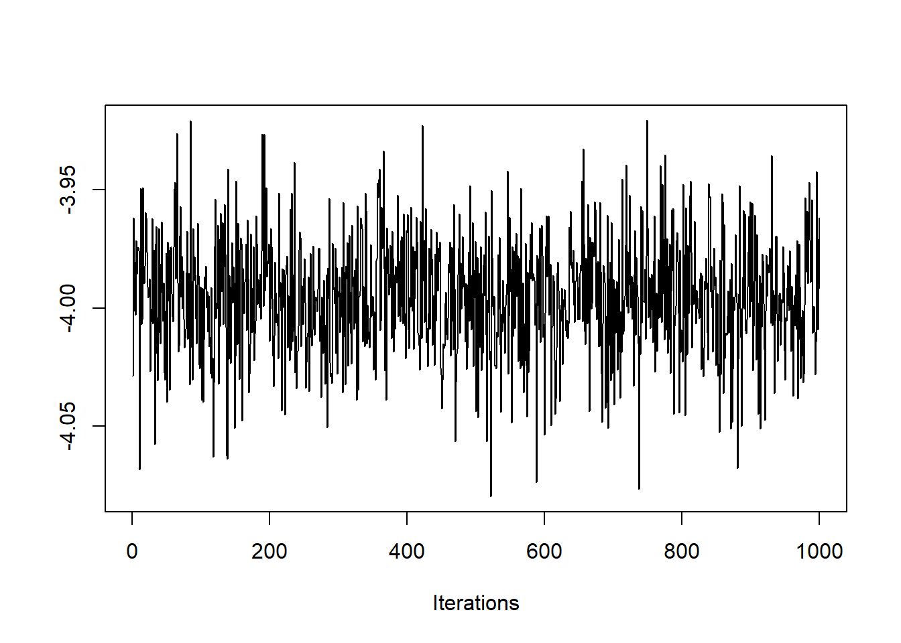
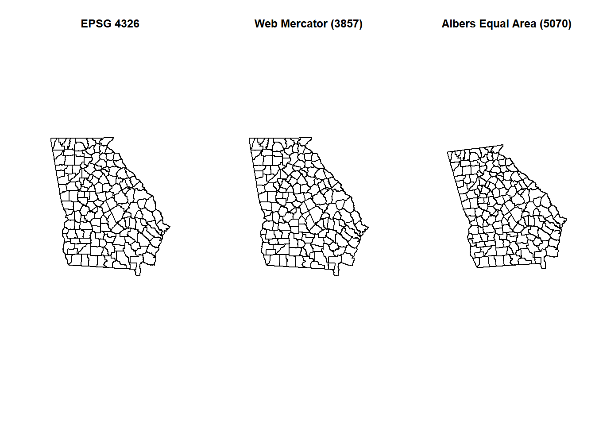

Week 1 Locating Spatial Epidemiology
1.1 Getting Ready
1.1.1 Learning objectives
| After this module you should be able to… |
|---|
| Explain the potential role of spatial analysis for epidemiologic thinking and practice. |
| Produce simple thematic maps of epidemiologic data in R. |
1.1.2 Additional Resources
- Geocompution with R by Robin Lovelace. This will be a recurring ‘additional resource’ as it provides lots of useful insight and strategy for working with spatial data in
R. I encourage you to browse it quickly now, but return often when you have qusetiona about how to handle geogrpahic data (especially of classsf) inR. - A basic introduction to the
ggplot2package. This is just one of dozens of great online resources introducing the grammar of graphics approach to plotting inR. - A basic introduction to the
tmappackage This is also only one of many introductions to thetmapmapping package.tmapbuilds on the grammar of graphics philosophy ofggplot2, but brings a lot of tools useful for thematic mapping!
1.1.3 Important Vocabulary
| Term | Definition |
|---|---|
| Unit of analysis | The unit or object that is measured, analyzed, and about which you wish to make inference. Examples of units of analysis are person, neighborhood, city, state, or hospital. |
| Attribute data | Nonspatial information about a geographic feature in a GIS, usually stored in a table and linked to the feature by a unique identifier. For example, attributes of a county might include the population size, density, and birth rate for the resident population |
| Geometry data | Spatial information about a geogrpahic feature. This could include the x, y coordinates for points or for vertices of lines or polygons, or the cell coordinates for raster data |
| Spatial data model: vector | A coordinate-based data model that represents geographic features as points, lines, and polygons. Each point feature is represented as a single coordinate pair, while line and polygon features are represented as ordered lists of vertices. Attributes are associated with each vector feature, as opposed to a raster data model, which associates attributes with grid cells (see figure below) |
| Spatial data model: raster | A spatial data model that defines space as an array of equally sized cells arranged in rows and columns, and composed of single or multiple bands. Each cell contains an attribute value and location coordinates. Unlike a vector structure, which stores coordinates explicitly, raster coordinates are contained in the ordering of the matrix. Groups of cells that share the same value represent the same type of geographic feature (see Figure below) |
| Geographic coordinate system | A reference system that uses latitude and longitude to define the locations of points on the surface of a sphere or spheroid. A geographic coordinate system definition includes a datum, prime meridian, and angular unit |
| Datum | The reference specifications of a measurement system, usually a system of coordinate positions on a surface (a horizontal datum) or heights above or below a surface (a vertical datum) |
| Projection | A method by which the curved surface of the earth is portrayed on a flat surface. This generally requires a systematic mathematical transformation of the earth's graticule of lines of longitude and latitude onto a plane. Some projections can be visualized as a transparent globe with a light bulb at its center (though not all projections emanate from the globe's center) casting lines of latitude and longitude onto a sheet of paper. Generally, the paper is either flat and placed tangent to the globe (a planar or azimuthal projection) or formed into a cone or cylinder and placed over the globe (cylindrical and conical projections). Every map projection distorts distance, area, shape, direction, or some combination thereof |

1.2 Spatial Thinking in Epidemiology
When first learning epidemiology, it can be difficult to distinguish between the concepts, theories, and purpose of epidemiology versus the skills, tools, and methods that we use to implement epidemiology. But these distinctions are foundational to our collective professional identity, and to the way we go about doing our work. For instance do you think of epidemiologists as data analysts, scientists, data scientists, technicians or something else? These questions are bigger than we can address in this class, but their importance becomes especially apparent when learning an area such as spatial epidemiology. This is because there is a tendency for discourse in spatial epidemiology to focus primarily on the data and the methods without understanding how each of those relate to the scientific questions and population health we are ultimately responsible for. Distinguishing these threads is an overarching goal of this course, even as we learn the data science and spatial analytic tools.
One quite simplistic but important example of how our questions and methods are inter-related is apparent when we think of data. Data is central to quantitative analysis, including epidemiologic analysis. So how is data different in spatial epidemiology? The first thing that might come to mind is that we have explicitly geographic or spatial measures contained within our data. But even more fundamental than the content is thinking about the unit of analysis.
While in many other examples in your epidemiology coursework, the explicit (or sometimes implicit) unit of analysis has been the individual person. It is certainly possible for individuals to be the unit of analysis in spatial epidemiology (e.g. we might measure the exact place where an individual lives). However oftentimes the units we observe and measure in spatial epidemiology – and therefore the units that compose much of our data – are not individuals but instead are geographic units (e.g. census tract, county, state, etc) and by extension the collection or aggregation of all the individuals therein. This has implications for precision, bias, and ultimately for inference (e.g. the meaning we can make from our analysis), as we’ll discuss throughout the semester.
One concrete implication of the above discussion is that you should always be able to answer a basic question about any dataset you wish to analyze: “what does one row of data represent?” A row of data is one way to think of the unit of analysis, and often (but not always) in spatial epidemiology a row of data is a summary of the population contained by a geographic unit. Said another way it is an ecologic summary of the population.
As we move through the semester, I encourage you to dig deep into how methods work, but also to step back and ask questions like “Why would I choose this method?” or “What question in epidemiology is this useful for?”
1.3 Spatial Analysis in Epidemiology
1.3.1 Spatial data storage foramts
If you have worked with spatial or GIS data using ESRI’s ArcMap, you will be familiar with what are called shapefiles. This is one very common format for storing geographic data on computers. ESRI shapefiles are not actually a single file, but are anywhere from four to eight different files all with the same file name but different extensions (e.g. .shp, .prj, .shx, etc). Each different file (corresponding to an extension) contains a different portion of the data ranging from the geometry data, the attribute data, the projection data, an index connecting it all together, etc.
What you may not know is that shapefiles are not the only (and in my opinion definitely not the best) way to store geographic data. In this class I recommend storing data in a format called geopackages indicated by the .gpkg extension. Geopackages are an open source format that were developed to be functional on mobile devices. They are useful when we are storing individual files in an efficient and compact way. It is worth noting that many GIS programs including ArcMap and QGIS can both read and write the geopackage format; so there is no constraint or limitation in terms of software when data are stored in .gpkg format.
1.3.2 Representing spatial data in R
Just as our conceptualization of, or thinking about data in spatial epidemiology requires some reflection, the actual storage and representation of that data with a computer tool such as R also requires some attention. Specifically spatial data in R is not exactly like the conventional aspatial epidemiologic data, but it is also need not be as complex as spatial data in software platforms like ESRI’s ArcMap.
First, it may be obvious, but spatial data is more complex than simple rectangular attribute data (e.g. data tables where a row is an observation and a column is a variable). To be spatial, a dataset must have a representation of geography, spatial location, or spatial relatedness, and that is most commonly done with either a vector or raster data model (see description above in vocabulary). Those spatial or geographic representations must be stored on your computer and/or held in memory, hopefully with a means for relating or associating the individual locations with their corresponding attributes. For example we want to know the attribute (e.g. the count of deaths for a given place), and the location of that place, and ideally we want to the two connected together.
Over the past 10+ years, R has increasingly been used to analyze and visualize spatial data. Early on, investigators tackling the complexities of spatial data analysis developed a number of ad hoc, one-off approaches to these data. This worked in the short term for specific applications, but it created new problems as users needed to generalize a method to a new situation, or chain together steps. In those settings it was not uncommon to convert a dataset to multiple different formats to accomplish all tasks.
An eventual response to this early tumult was a thoughtful and systematic approach to defining a class of data that tackled the unique challenges of spatial data in R. Roger Bivand, Edzer Pebesma and others developed the sp package which defined spatial data classes, and provided functional tools to interact with them. The sp package defined specific data classes to hold points, lines, and polygons, as well as raster/grid data; each of these data classes can contain geometry only (these have names like SpatialPoints or SpatialPolygons) or could contain geometry plus related data attributes (these have names like SPatialPointsDataFrame or SpatialPolygonsDataFrame). Each spatial object can contain all the information spatial data might include: the spatial extent (min/max x, y values), the coordinate system or spatial projection, the geometry information, the attribute information, etc.
Because of the flexibility and power of the sp* class of objects, they became a standard up until the last few years. sp* classes continue to be the only format allowed by a few of the packages we will use this semester. However analysts sometimes find the complexity of the sp* objects to be a hindrance to efficient processing of geographic data. Specifically the information is stored in numerous ‘slots’ (e.g. special storage structures useful for computer programmers but less useful for applied analysts).
As the number of ways to manipulate and visualize data increases, there was a desire to make spatial data behave more like tabular or rectangular data. This led the same team (e.g. Bivand, Pebesma, others) to develop the Simple Features set of spatial data classes for R. Loaded with the sf package, this data format has quickly become the standard for handling spatial data in R. Recognizing that many users and functions prefer the older sp* objects, the sf package includes a number of utility functions for easily converting back and forth.
In this class we will use sf* class objects as the preferred data class, but because some of the tools we’ll learn require sp* we will occasionally go back and forth.
sf* data classes are designed to hold all the essential spatial information (projection, extent, geometry), but do so with an easy to evaluate data.frame format that integrates the attribute information and the geometry information together. The result is more intuitive sorting, selecting, aggregating, and visualizing.
1.3.3 Benefits of sf data classes
As Robin Lovelace writes in his online eBook, Gecomputation in R, sf data classes offer an approach to spatial data that is compatible with QGIS and PostGIS, important non-ESRI open source GIS platforms, and sf functionality compared to sp provides:
- Fast reading and writing of data
- Enhanced plotting performance
sfobjects can be treated as data frames in most operationssffunctions can be combined using%>%pipe operator and works well with thetidyversecollection ofRpackages (see Tips for usingdplyrfor examples)sffunction names are relatively consistent and intuitive (all begin withst_)
1.3.4 Working with spatial data in R
Here and in lab, one example dataset we will use, called ga.mvc quantifies the counts and rates of death from motor vehicle crashes in each of Georgia’s \(n=159\) counties. The dataset is vector in that it represents counties as polygons with associated attributes (e.g. the mortality information, county names, etc).
1.3.4.1 Importing spatial data into R
It is important to distinguish between two kinds of data formats. There is a way that data is stored on a computer hard drive, and then there is a way that data is organized and managed inside a program like R. The shapefiles (.shp) popularized by ESRI/ArcMap is an example of a format for storing spatial data on a hard drive. In contrast, the discussion above about the sf* and sp* data classes refer to how data is organized inside R. Luckily, regardless of how data is stored on your computer, it is possible to import almost any format into R, and once inside R it is possible to make it into either the sp* or sf* data class. That means if you receive data as a .shp shapefile, as a .gpkg geopackage, or as a .tif raster file, each can be easily imported.
All sf functions that act on spatial objects begin with the prefix st_. Therefore to import (read) data we will use st_read(). This function determines how to import the data based on the extension of the file name you specify. Look at the help documentation for st_read(). Notice that the first argument dsn=, might be a complete file name (e.g. myData.shp), or it might be a folder name (e.g. mygeodatabase.gdb). So if you had a the motor vehicle crash data saved as both a shapefile (mvc.shp, which is actually six different files on your computer), and as a geopackage (mvc.gpkg) you can read them in like this:
# this is the shapefile
mvc.a <- st_read('GA_MVC/ga_mvc.shp')
# this is the geopackage
mvc.b <- st_read('GA_MVC/ga_mvc.gpkg')We can take a look at the defined data class of the imported objects within R:
## [1] "sf" "data.frame"## [1] "sf" "data.frame"First, note that when we use the st_read() function, the data class (e.g. the way the data are defined and organized within R) is the same for both mvc.a (which started as a .shp file) and mvc.b (which started as a .gpkg file). That is because st_read() automatically classifies spatial data using sf classes when it imports.
You will also notice that when we examined the class() of each object, they are classified as both sf and data.frame class. That is incredibly important, and it speaks to an elegant simplicity of the sf* data classes! That it is classified as sf is perhaps obvious; but the fact that each object is also classified as data.frame means that we can treat the object for the purposes of data management, manipulation and analysis as a relatively simple-seeming object: a rectangular data.frame. How does that work? We will explore this more in lab but essentially each dataset has rows (observations) and columns (variables). We can see the variable/column names like this:
## [1] "GEOID" "NAME" "MVCRATE_17" "geometry"## [1] "GEOID" "NAME" "MVCRATE_17" "geom"We can see that each dataset has the same attribute variables (e.g. GEOID, NAME, MVCRATE_17), and then a final column called geometry in one and called geom in another. These geometry columns are unique in that they don’t hold a single value like the other columns; each ‘cell’ in those columns actually contains an embedded list of \(x,y\) coordinates defining the vertices of the polygons for each of Georgia’s counties.
Combining these two observations, we now know that we can work with a wide range of spatial data formats, and that once imported we can conceive of (and manipulate!) these data almost as if they were simple rectangular datasets. This has implications for subsetting, recoding, merging, and aggregating data as we’ll learn in the coming weeks.
1.3.4.2 Exporting spatial data from R
While importing is often the primary challenge with spatial data and R, it is not uncommon that you might modify or alter a spatial dataset and wish to save it for future use, or to write it out to disk to share with a colleague. Luckily the sf package has the same functionality to write an sf spatial object to disk in a wide variety of formats including shapefiles (.shp) and geopackages (.gpkg). Again, R uses the extension you specify in the filename to determine the target format.
1.3.5 Basic visual inspection/plots
The base-R plot() function is extended by the sf package. That means that if you call plot() on a spatial object without having loaded sf, the results will be different than if plot() called after loading sf.
When you plot() with sf, by default it will try to make a map for every variable in the data frame! Try it once. If this is not what you want, you can force it to only plot some variables by providing a vector of variable names.
## Warning: plotting the first 9 out of 17 attributes; use max.plot = 17 to plot
## all


You might only want to see the geometry of the spatial object (e.g. not attributes) if you are checking its extent, the scale, or otherwise confirming something about the spatial aspects of the object. Here are two approaches to quickly plot the geometry:

1.3.6 Working with CRS and projection
If CRS (coordinate reference system) and projection information was contained in the original file you imported, it will be maintained. If there is NO CRS information imported it is critical that you find out the CRS information from the data source! The most unambiguous way to describe a projection is by using the EPSG code, which stands for European Petroleum Survey Group. This consortium has standardized hundreds of projection definitions in a manner adopted by several R packages including rgdal and sf.
This course is not a GIS course, and learning about the theory and application of coordinate reference systems and projections is not our primary purpose. However some basic knowledge is necessary for successfully working with spatial epidemiologic data. Here are several resources you should peruse to learn more about CRS, projections, and EPSG codes:
- A useful overview/review of coordinate reference systems in
R - Robin Lovelace’s Geocompuation in R on projections with
sf - EPSG website: This link is to a searchable database of valid ESPG codes
- Here are some useful EPSG codes
We already saw the CRS/projection information when we used the head() function above; it was at the top and read WGS 84. Recall there are two main types of CRS: purely geographic which is to say coordinate locations are represented as latitude and longitude degrees; and projected which means the coordinate values have been transformed for representation of the spherical geoid onto a planar (Euclidean) coordinate system. WGS 84 is a ubiquitous geographic coordinate system common to boundary files retrieved from the U.S. Census bureau.
An important question when you work with a spatial dataset is to understand whether it is primarily a geographic or projected CRS, and if so which one.
## [1] TRUEThis quick logical test returns TRUE or FALSE to answer the question “Is the sf object simply a longitude/latitude geographic CRS?”. The answer in this case is TRUE because WGS 84 is a geographic (longlat) coordinate system. But what if it were FALSE or we wanted to know more about the CRS/projection?
## Coordinate Reference System:
## User input: WGS 84
## wkt:
## GEOGCRS["WGS 84",
## DATUM["World Geodetic System 1984",
## ELLIPSOID["WGS 84",6378137,298.257223563,
## LENGTHUNIT["metre",1]]],
## PRIMEM["Greenwich",0,
## ANGLEUNIT["degree",0.0174532925199433]],
## CS[ellipsoidal,2],
## AXIS["geodetic latitude (Lat)",north,
## ORDER[1],
## ANGLEUNIT["degree",0.0174532925199433]],
## AXIS["geodetic longitude (Lon)",east,
## ORDER[2],
## ANGLEUNIT["degree",0.0174532925199433]],
## USAGE[
## SCOPE["unknown"],
## AREA["World"],
## BBOX[-90,-180,90,180]],
## ID["EPSG",4326]]This somewhat complicated looking output is a summary of the CRS stored with the spatial object. There are two things to note about this output:
- At the top, the User input is
WGS 84 - At the bottom of the section labeled
GEOGCRSit saysID["EPSG",4326"]
While there are literally hundreds of distinct EPSG codes describing different geographic and projected coordinate systems, for this semester there are three worth remembering:
- EPSG: 4326 is a common geographic (unprojected or long-lat) CRS
- EPSG: 3857 is also called WGS 84/Web Mercator, and is the dominant CRS used by Google Maps
- EPSG: 5070 is the code for a projected CRS called Albers Equal Area which has the benefit of representing the visual area of maps in an equal manner.
Once the CRS/projection is clearly defined, you may choose to transform or project the data to a different system. The sf package has another handy function called st_transform() that takes in a spatial object (dtaaset) with one CRS and outputs that object transformed to a new CRS.
# This uses the Albers equal area USA,
mvc.aea <- st_transform(mvc, 5070)
# This uses the Web Mercator CRS (EPSG 3857) which is just barely different from EPSG 4326
mvc.wm <- st_transform(mvc, 3857)
# Now let's look at them side-by-side
plot(st_geometry(mvc), main = 'EPSG 4326')
plot(st_geometry(mvc.wm), main = 'Web Mercator (3857)')
plot(st_geometry(mvc.aea), main = 'Albers Equal Area (5070)')
Do you see the difference between the three? Because EPSG 4326 and 3857 are both unprojected (e.g. they are long/lat), they appear quite similar but are not identical. Albers Equal Area, on the other hand, is more distinct. In general we will prefer to use ‘projected’ rather than ‘unprojected’ (long/lat only) data for both visualization and analysis. That means that whenever you bring in a new dataset you will need to check the CRS and project or transform as desired.
st_set_crs() to define it, but this assumes you know what it is. There are two arguments to this function: the first is x = objectName, and the second is value = xxx where ‘xxx’ is a valid EPSG code.